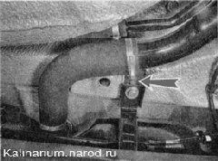
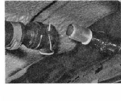
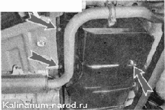
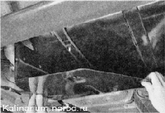
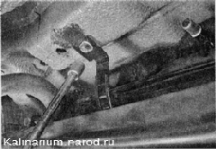

Топливный бак - снятие и установка
Для выполнения работы потребуется помощник, а также:
— смотровая канава или эстакада;
— шланг для перекачки топлива.
Можно обойтись без помощника. При этом необходим регулируемый по высоте упор или подставка. Если есть возможность, перед выполнением работы следует максимально израсходовать топливо из бака.
Снятие
1. Подготавливаем автомобиль к выполнению работы.
2. Сбрасываем давление топлива.
После сброса давления в топливопроводе остается небольшое количество топлива.
3. Крестовой отверткой ослабляем затяжку хомута крепления шланга топливного бака к заливной трубе и отсоединяем шланг от трубы.

4. Через шланг откачиваем максимально возможное количество топлива из бака.
5. Нажав пружинный фиксатор, отсоединяем наконечник шланга вентиляции бака от патрубка.

6. Сжимая пружинные фиксаторы, отсоединяем наконечник трубки сепаратора от трубки адсорбера.

7. Торцовым ключом на 10 мм отворачиваем три гайки крепления защитного экрана топливного бака.

8. снимаем защитный экран.
9. Торцовым ключом на 10 мм отворачиваем три гайки крепления защитного кожуха трубок топливной системы.
10. Сжимая фиксатор, разъединяем трубки топливопровода и трубку продувки адсорбера.
11. Устанавливаем под бак регулируемый упор (или помощник удерживает бак снизу).
12. Торцовым ключом на 13 мм отворачиваем два болта хомутов крепления топливного бака.
13. Снимаем топливный бак в сборе с адсорбером и топливным фильтром.
Установка
Устанавливаем топливный бак в обратной последовательности.
Если не удалось запустить двигатель с двух-трех попыток, попробуйте уда лить воздух из топливной рампы через клапан диагностического штуцера .